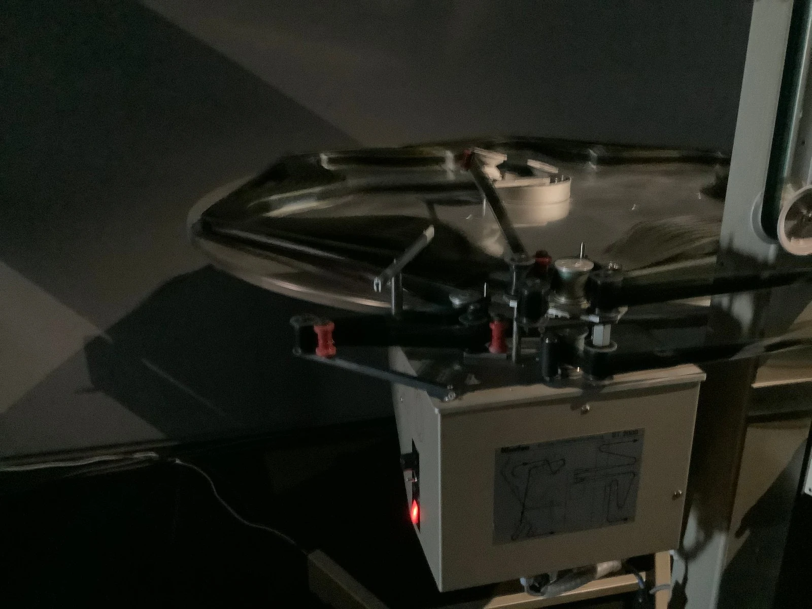
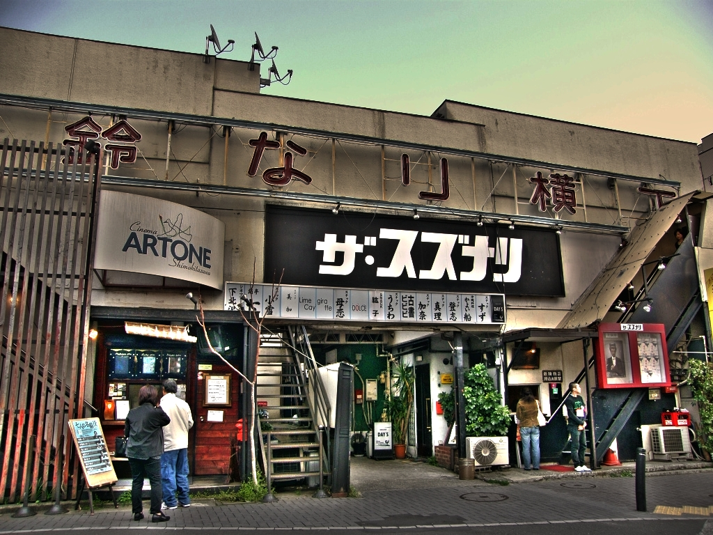

MENU
見つける
気になるリスト
本、音楽、映画。作品から、街へ。
映像 高円寺の踊り
いつもの通りが、踊りの舞台に。まずは5分39秒、高円寺の熱の中へ。
主催団体の公式映像 · 2025年
まずひとつ観る・聴く。気になったら、作品と街を辿る。

街には、文化が息づく理由がある。
高円寺の踊りを、記録と写真で知る。
高円寺の踊り
高円寺の踊りは、どう始まった？
1957年の始まりから、木場連との出会いへ。
開催日から見つける
音楽を聴いたらライブへ。本を読んだら、作り手の話を聞きに。街と作品の続きを、開催中・近日開催の催しから。
街・開催週・誰と行くかで選べます。
